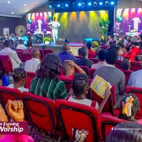
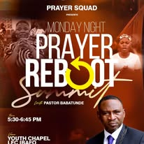
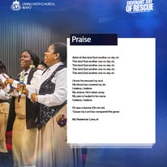
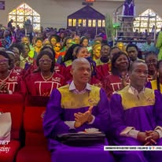

Experience God's Presence & Power at Living Faith Church Ibafo
A home of signs, wonders, and supernatural turnarounds. Where faith is ignited, hope is restored, and destinies are gloriously established in Christ Jesus along the Lagos-Ibadan expressway.
Sunday 1st Service
Sunday at 6:30 AM (WAT)
Join Us in God's Presence
Experience powerful praise, fervent prayers, and the unadulterated Word of Faith throughout the week.
Sunday Worship Services
Three Glorious Encounters Every Sunday
- 1st Service: 6:30 AM - 8:15 AM
- 2nd Service: 8:30 AM - 10:15 AM
- 3rd Service: 10:30 AM - 12:15 PM
Includes Children's Church & Teens Church
Midweek Communion Service
Every Wednesday Evening
- Time: 6:00 PM - 7:45 PM
- Focus: Word, Healing & Holy Communion
- Venue: Main Church Sanctuary
Break free from spiritual fatigue mid-week
Covenant Hour of Prayer
Monday to Saturday Morning
- Weekdays (Mon-Fri): 6:00 AM - 7:00 AM
- Saturdays: 6:30 AM - 7:30 AM
- Venue: Sanctuary & Online broadcast
Secure your day with early morning kingdom advancement
Prophetic Word & Devotional of the Day
Start and empower your day with undiluted covenant revelations and prophetic declarations.
Walking in the Supernatural by the Word of Faith
"For whatsoever is born of God overcometh the world: and this is the victory that overcometh the world, even our faith." — 1 John 5:4
Faith is not a wishful thought or a religious sentiment; it is a living spiritual force drawn from the living Word of God. When faith is put into active operation, heaven moves and obstacles give way.
To operate in victory, you must feed your spirit continually with God's promises. Whatever the Word cannot do, let no human institution attempt it. Today, take authority over every contrary circumstance and decree your dominion!
"I am born of God; therefore, I am an overcomer! No sickness, failure, or setback has power over my destiny. As I speak God's Word in faith today, mountains move, doors open, and the favor of God surrounds me like a shield in Jesus' name!"
Upcoming Events & Prophetic Focus
Mark your calendar and prepare for encounters that will redefine your life and family.
Week of Spiritual Emphasis
Wednesday - Friday • 6:00 PM Daily
Main Sanctuary & Holy Communion
Three days of waiting upon the Lord with fasting and daily Holy Communion to break every stubborn yoke and renew spiritual fire.
Covenant Day of Open Doors & Business Boom
Sunday 3 Services (6:30 AM, 8:30 AM, 10:30 AM)
Living Faith Church Ibafo Altar
Special prophetic impartation service for career acceleration, financial multiplication, business breakthroughs, and supernatural favor.
Youth Alive Leadership & Career Summit
Saturday • 10:00 AM - 1:00 PM
Youth Hall / Main Auditorium
Practical insights on digital skills, entrepreneurship, relationship mastery, and walking in kingdom dominion for young adults.
WOFBI Special Basic Certificate Course (BCC)
Intensive 2 Weeks (8:00 AM - 3:00 PM Daily)
WOFBI Lecture Halls Ibafo
In-depth Word encounter covering Principles of Faith, Word Foundation, Vision & Ministry, Leadership, and Spiritual Warfare.

A Family of Faith, Love, and Dominion
Living Faith Church Ibafo is a vibrant parish of the Living Faith Church Worldwide (also known as Winners Chapel International). We are driven by a burning passion to see lives radically transformed by the power of God's Word.
"The hour has come to liberate the world from all oppressions of the devil through the preaching of the Word of Faith; and I am sending you to undertake this task."
Under the pastoral leadership of Pastor Babatunde Olaitan, Living Faith Church Ibafo continues to be a lighthouse of spiritual illumination along the Lagos-Ibadan corridor, birthing giants and raising people of purpose.
The 12 Pillars of the Commission
The foundational revelations that anchor every teaching and spiritual engagement at Living Faith Church.
Faith
1 John 5:4
The Word
John 1:1-5
The Supernatural
Mark 16:17-18
The Holy Ghost
Acts 1:8
Praise
Psalm 22:3
Prosperity
3 John 2
Prayer
1 John 5:14
Healing
Isaiah 53:5
Wisdom
Proverbs 4:7
Success
Joshua 1:8
Vision
Habakkuk 2:1-3
Consecration
Hebrews 12:14
Covenant Scripture Vault
Find exact Bible promises for your situation. Stand on God's Word and see the devil bow!
Latest Sermons & Messages
Listen to anointed life-changing messages, voice summaries, download sermon outlines, and build unshakeable faith.
Winners Satellite Fellowship (WSF)
"And daily in the temple, and in every house, they ceased not to teach and preach Jesus Christ." — Acts 5:42.
Connect with a loving family near your home every Saturday at 5:00 PM - 6:00 PM.
Our Ministries & Service Units
Discover a place where your gifts are ignited for kingdom advancement. In stewardship lies your divine reward!
Youth Alive Fellowship (YAF)
Empowering teenagers and young adults with leadership values, spiritual stamina, career excellence, and divine purpose.
Winners Voice (Church Choir)
Leading the congregation into the Holy of Holies through spirit-filled praise, worship, and inspiring musical ministrations.

Children & HeritageKingdom Heritage (Children Church)
Nurturing young minds in Bible stories, godly morals, creative arts, and foundational Christian disciplines in a fun, safe space.
 Teens & Junior Church
Teens & Junior Church
Teens Alive Church
Guiding secondary school youth through identity, peer challenges, academic excellence, and kingdom boldness.
Sanctuary Keepers & Ushers
Ensuring the house of God is maintained in dignity, cleanliness, orderly protocol, and a warm welcoming atmosphere.
Technical, Sound & Media
Managing audio mixing, visual broadcast, live video feeds, graphics, photography, and digital reach for the kingdom.
WOFBI (Bible Institute)
Equipping believers with in-depth biblical revelations, leadership training, and ministry courses: BCC, LCC, and LDC.
Medical & Community Outreach
Extending Christ’s love to Ibafo community through medical checks, welfare assistance, fitness programmes, and soul winning.
Your Spiritual Growth Track
Take clear, guided steps from accepting Christ to walking in full dominion and fruitful kingdom service.
Salvation & New Birth
Make Jesus the Lord of your life and step into eternal life, righteousness, and divine sonship.
Water & Holy Ghost Baptism
Bury the old sinful nature by immersion in water and receive power by the Holy Ghost with evidence of speaking in tongues.
Believer's Foundation Class (BFC)
Learn core Christian doctrines, the mystery of the new birth, Christian disciplines, and how to maintain total victory.
WOFBI & Kingdom Stewardship
Undergo certified leadership training in WOFBI and be inducted into an active service unit for supernatural promotion.
Online Giving & Seed Sowing
"Give, and it shall be given unto you; good measure, pressed down, and shaken together, and running over..." — Luke 6:38
Honour the Lord with Your Substance
Every seed sown into the work of God at Living Faith Church Ibafo goes directly into winning souls, church growth, humanitarian benevolence, and maintaining the sanctuary of God.
Interactive Tithe & Giving Calculator
Calculate your 10% tithe and structured offeringQuick USSD Transfer Codes:
Testimonies of Divine Turnarounds
What God has done for one, He is ready to do for all! Read how God is transforming lives at Living Faith Church Ibafo.
Bro. Samuel A.
Supernatural Job & Promotion"After 3 years of unemployment, I engaged tirelessly in Covenant Hour of Prayer and kingdom advancement outreach as instructed from the altar. Within two weeks, I received an unannounced multi-national job offer with double my expected salary! God of Winners is real!"
Sis. Comfort E.
Instant Healing & Deliverance"I suffered from severe chronic ulcer and hypertension for over 5 years. During the Feet Washing service at LFC Ibafo, the Pastor declared my total liberty. As I took the Holy Communion, the pain vanished permanently. Hospital reports now declare me 100% clean!"
Mr. & Mrs. Oladipo
Miracle Child After 6 Years"Doctors had concluded that we could never conceive due to multiple complications. We stood on the prophetic word from Bishop Oyedepo and partook faithfully in our Sunday anointing services. Today, God has blessed our marriage with healthy twin boys!"
We Can't Wait to Welcome You!
Visiting a new church can feel intimidating, but we promise you'll feel right at home the moment you walk through our doors.
A typical service lasts around 90-100 minutes. You will experience vibrant, uplifting praise and worship, a life-transforming message from the Word of God, and specific prayers for supernatural breakthroughs.
Yes! Our Kingdom Heritage Children Church and Teens Church provide secure, age-appropriate ministry where your children can learn God's Word, play, and make friends under the care of certified teachers.
Yes, we provide free Sunday morning church buses across key junctions in Ibafo, Asese, Mowe, and Magboro. You can request a pickup location when planning your visit.
Come as you are! Whether in formal attire, traditional African wear, or smart casual, you will be warmly embraced by our hospitable ushers and pastoral hosts.
Plan Your Visit
Let us know you're coming so we can reserve a seat and VIP welcome gift for you!
Church Media Gallery
Glimpses of God's glory, vibrant worship, community outreach, and special celebrations at Living Faith Church Ibafo.




Connect With Us
We are always here to listen, pray with you, and help you find your place in God's family.
Sanctuary Address
Lagos-Ibadan Expressway, Gideon Village, Ibafo, Ogun State, Nigeria.
Open in Google MapsPastoral & Help Lines
+234 803 000 0000 | +234 812 000 0000
Mon - Fri: 8:00 AM - 5:00 PMEmail Enquiries
info@livingfaithibafo.org
counseling@livingfaithibafo.org
WhatsApp Pastoral Hotline
Chat with our pastoral team for 24/7 emergency prayers and guidance.
Start WhatsApp ChatFree Sunday Bus Pickup Points
Buses depart promptly at 5:45 AM, 7:45 AM & 9:45 AM from:
Submit a Confidential Prayer Request
Our pastoral intercessory team prays over every request received with faith and the anointing.
Send Us a Message
Got questions regarding services, counseling, weddings, or WOFBI admission?